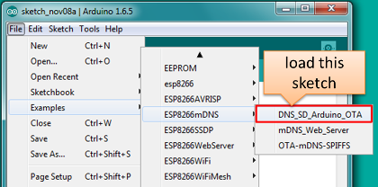

Table of Contents
* [Introduction](#introduction)
* [Security](#security)
* [Safety](#safety)
* [Basic Requirements](#basic-requirements)
* [Arduino IDE](#arduino-ide)
* [Requirements](#requirements)
* [Application Example](#application-example)
* [Classic OTA](#classic-ota)
* [ArduinoOTA](#arduinoota)
* [Web Browser](#web-browser)
* [Requirements](#requirements-1)
* [Implementation Overview](#implementation-overview)
* [Application Example](#application-example-1)
* [HTTP Server](#http-server)
* [Requirements](#requirements-2)
* [Arduino code](#arduino-code)
* [Simple updater](#simple-updater)
* [Advanced updater](#advanced-updater)
* [Server request handling](#server-request-handling)
* [Simple updater](#simple-updater-1)
* [Advanced updater](#advanced-updater-1)
* [Stream Interface](#stream-interface)
* [Updater class](#updater-class)
Introduction
OTA (Over the Air) update is the process of loading the firmware to ESP module using Wi-Fi connection rather that a serial port. Such functionality became extremely useful in case of limited or no physical access to the module.
OTA may be done using:
Arduino IDE option is intended primarily for software development phase. The two other options would be more useful after deployment, to provide module with application updates manually with a web browser or automatically using a http server.
In any case first firmware upload have to be done over a serial port. If OTA routines are correctly implemented in a sketch, then all subsequent uploads may be done over the air.
There is no imposed security on OTA process from being hacked. It is up to developer to ensure that updates are allowed only from legitimate / trusted source. Once update is complete, module restarts and new code is executed. Developer should ensure that application running on module is shut down and restarted in a safe manner. Chapters below provide additional information regarding security and safety of OTA process.
Security
Module has to be exposed wirelessly to get it updated with a new sketch. That poses chances of module being violently hacked and loaded with some other code. To reduce likelihood of being hacked consider protecting your uploads with a password, selecting certain OTA port, etc.
Check functionality provided with ArduinoOTA library that may improve security:
void setPort(uint16_t port);
void setHostname(const char* hostname);
void setPassword(const char* password);
Certain protection functionality is already built in and do not require any additional coding by developer. ArduinoOTA and espota.py use Digest-MD5 to authenticate upload. Integrity of transferred data is verified on ESP side using MD5 checksum.
Make your own risk analysis and depending on application decide what library functions to implement. If required consider implementation of other means of protection from being hacked, e.g. exposing module for uploads only according to specific schedule, trigger OTA only be user pressing dedicated “Update” button, etc.
Safety
OTA process takes ESP’s resources and bandwidth during upload. Then module is restarted and a new sketch executed. Analyse and test how it affects functionality of your existing and new sketch.
If ESP is placed in remote location and controlling some equipment, you should put additional attention what happens if operation of this equipment is suddenly interrupted by update process. Therefore decide how to put this equipment into safe state before starting the update. For instance your module may be controlling a garden watering system in a sequence. If this sequence is not properly shut down and a water valve left open, your garden may be flooded if this valve is not closed after OTA is finished and module restarts.
The following functions are provided with ArduinoOTA library and intended to handle functionality of your application during specific stages of OTA or on an OTA error:
void onStart(OTA_CALLBACK(fn));
void onEnd(OTA_CALLBACK(fn));
void onProgress(OTA_CALLBACK_PROGRESS(fn));
void onError(OTA_CALLBACK_ERROR (fn));
Basic Requirements
- Flash chip size is 2x the size of the sketch.
The following chapters provide more details and specific methods of doing OTA.
Arduino IDE
Uploading modules wirelessly from Arduino IDE is intended for the following typical scenarios: - during firmware development as a quicker alternative to loading over a serial - for updating small quantity of modules - only if modules are available on the same network as the computer with Arduino IDE
Requirements
- The ESP and the computer must be connected to the same network.
Application Example
Currently there are two software configurations that support OTA updates.
Classic OTA: Arduino IDE 1.6.5 and 1.6.5-947-g39819f0 (of July 23, 2015) or 1.6.5-1160-gef26c5f (of Sep 30, 2015) version of platform package that provides first OTA implementation, yet without support for ArduinoOTA library. This particular configuration is easier to configure in Arduino IDE and therefore suggested for less experienced users. It soon will be depreciated once implementation below is fully released.
ArduinoOTA: Arduino-PR-4107-BUILD-421 and latest git version of platform package that includes ArduinoOTA library. This configuration features preliminary build of Arduino IDE and is intended for more experienced users. Please mid your step.
Instructions below demonstrate how to configure both Classic OTA and ArduinoOTA using NodeMCU 1.0 (ESP-12E Module) board.
Classic OTA
Before you begin, please make sure that you have the following installed:
- Arduino IDE and ESP8266 board support as described under https://github.com/esp8266/Arduino#installing-with-boards-manager
Python 2.7 (do not install Python 3.5 that is not supported):
Note: Windows users should select “Add python.exe to Path” (see below – this option is not selected by default).

Now prepare the sketch and configuration for the upload over a serial port.
- Start Arduino IDE and load sketch DNS_SD_Arduino_OTA.ino available under File > Examples > ESP8266mDNS  Note: This sketch is available only for 1.6.5-947-g39819f0 (of July 23, 2015) and 1.6.5-1160-gef26c5f (of Sep 30, 2015) versions of platform packages installed in Arduino IDE using https://github.com/esp8266/Arduino#installing-with-boards-manager. It was removed in #980 from GitHub repository.
- Update ssid and pass in the sketch so the module can join your Wi-Fi network

- Configure upload parameters as below (you may need to adjust configuration if you are using a different module):

Upload the sketch (Ctrl+U). Once done open Serial Monitor (Ctrl+Shift+M) and check if module has joined your Wi-Fi network.

Only if module is connected to network, after a couple of seconds, the esp8266-ota port will show up in Arduino IDE:

Now get ready for your first OTA upload by changing configuration settings as follows:

Note: If you do not see “Upload Using: OTA” option available for “NodeMCU 1.0 (ESP-12E Module)” board, please upload the latest boards.txt file from GitHub repository, replace existing file and restart Arduino IDE.
If you have successfully completed all the above steps, you can upload (Ctrl+U) the same (or any other) sketch over OTA:

Note To be able to upload your sketch over and over again using OTA, you need to embed OTA routines inside. Please use DNS_SD_Arduino_OTA.ino as an example.
ArduinoOTA
Upload and install the following software:
- Arduino-PR-4107-BUILD-421 - https://github.com/esp8266/Arduino/pull/984#issuecomment-155905800
- Latest git version of platform package - https://github.com/esp8266/Arduino#using-git-version-
- Python 2.7
Proceed to step 2 under Classic OTA Configuration using BasicOTA.ino or OTALeds.ino sketch instead.
Carry on with remaining steps.
Web Browser
Updates described in this chapter are done with a web browser that can be useful in the following typical scenarios:
- after application deployment if loading directly from Arduino IDE is inconvenient or not possible
- after deployment if user is unable to expose module for OTA from external update server
- to provide updates after deployment to small quantity of modules when setting an update server is not practicable
Requirements
- The ESP and the computer must be connected to the same network.
Implementation Overview
Updates with a web browswer are implemented using ESP8266HTTPUpdateServer class together with ESP8266WebServer and ESP8266mDNS classes. The following code is required to get it work:
setup()
MDNS.begin(host);
httpUpdater.setup(&httpServer);
httpServer.begin();
MDNS.addService("http", "tcp", 80);
loop()
httpServer.handleClient();
Application Example
The sample implementation provided below has been done using:
- example sketch WebUpdater.ino available in ESP8266HTTPUpdateServer library
- NodeMCU 1.0 (ESP-12E Module)
You can use another module if it meets “Flash chip size is 2x the size of the sketch” requirement.
Before you begin, please make sure that you have the following software installed:
- Arduino IDE and 2.0.0-rc1 (of Nov 17, 2015) version of platform package as described under https://github.com/esp8266/Arduino#installing-with-boards-manager
- Host software depending on O/S you use:
- Avahi http://avahi.org/ for Linux
- Bonjour http://www.apple.com/support/bonjour/ for Windows
- Mac OSX and iOS - support is already built in / no any extra s/w is required
Prepare the sketch and configuration for initial upload with a serial port.
- Start Arduino IDE and load sketch WebUpdater.ino available under File > Examples > ESP8266HTTPUpdateServer.
- Update ssid and pass in the sketch so the module can join your Wi-Fi network.
- Open File > Preferences, look for “Show verbose output during:” and check out “compilation” option.
 Note: This setting will be required in step 5 below. You can uncheck this setting afterwards.
Note: This setting will be required in step 5 below. You can uncheck this setting afterwards.
Upload sketch (Ctrl+U). Once done open Serial Monitor (Ctrl+Shift+M) and check if you see the following message displayed, that contains url for OTA update.
 Note: Such message will be shown only after module successfully joins network and is ready for an OTA upload:
Note: Such message will be shown only after module successfully joins network and is ready for an OTA upload:Now open web browser and enter the url provided on Serial Monitor, i.e. http://esp8266-webupdate.local/update. Once entered, browser should display a form like below that has been served by your module. The form invites you to choose a file for update.
 Note: If entering “http://esp8266-webupdate.local/update” does not work, try replacing “esp8266-webupdate” with module’s IP address. For example, if your module IP is “192.168.1.100” then url should be “http://192.168.1.100/update”. This workaround is useful in case the host software installed in step 2 does not work. If still nothing works and there are no clues on Serial Monitor, try to diagnose issue by opening provided url in Google Chrome, pressing F12 and checking contents of “Console” and “Network” tabs. Chrome provides some advanced logging on these tabs.
Note: If entering “http://esp8266-webupdate.local/update” does not work, try replacing “esp8266-webupdate” with module’s IP address. For example, if your module IP is “192.168.1.100” then url should be “http://192.168.1.100/update”. This workaround is useful in case the host software installed in step 2 does not work. If still nothing works and there are no clues on Serial Monitor, try to diagnose issue by opening provided url in Google Chrome, pressing F12 and checking contents of “Console” and “Network” tabs. Chrome provides some advanced logging on these tabs.To obtain the file navigate to directory used by Arduino IDE to store results of compilation. You can check the path to this file in compilation log shown in IDE debug window as marked below.

Now press “Choose File” in web browser, go to directory identified in step 5 above, find the file “WebUpdater.cpp.bin” and upload it. If upload is successful you will see “OK” on web browser like below.

Module will reboot that should be visible on Serial Monitor:

Just after reboot you should see exactly the same message “HTTPUpdateServer ready! Open http:// esp8266-webupdate.local /update in your browser” like in step 3. This is because module has been loaded again with the same code – first using serial port, and then using OTA.
Once you are comfortable with this procedure go ahead and modify WebUpdater.ino sketch to print some additional messages, compile it, locate new binary file and upload it using web browser to see entered changes on a Serial Monitor.
You can also add OTA routines to your own sketch following guidelines in Implementation Overview above. If this is done correctly you should be always able to upload new sketch over the previous one using a web browser.
In case OTA update fails dead after entering modifications in your sketch, you can always recover module by loading it over a serial port. Then diagnose the issue with sketch using Serial Monitor. Once the issue is fixed try OTA again.
HTTP Server
ESPhttpUpdate class can check for updates and download a binary file from HTTP web server.
It is possible to download updates from every IP or domain address on the network or Internet.
Requirements
- web server
Arduino code
Simple updater
Simple updater downloads the file every time the function is called.
ESPhttpUpdate.update("192.168.0.2", 80, "/arduino.bin");
Advanced updater
Its possible to point update function to a script at the server. If version string argument is given, it will be sent to the server. Server side script can use this to check if update should be performed.
Server side script can respond as follows: - response code 200, and send the firmware image, - or response code 304 to notify ESP that no update is required.
t_httpUpdate_return ret = ESPhttpUpdate.update("192.168.0.2", 80, "/esp/update/arduino.php", "optional current version string here");
switch(ret) {
case HTTP_UPDATE_FAILED:
Serial.println("[update] Update failed.");
break;
case HTTP_UPDATE_NO_UPDATES:
Serial.println("[update] Update no Update.");
break;
case HTTP_UPDATE_OK:
Serial.println("[update] Update ok."); // may not called we reboot the ESP
break;
}
Server request handling
Simple updater
For the simple updater the server only needs to deliver the binary file for update.
Advanced updater
For advanced update management a script needs to run at the server side, for example a PHP script. At every update request the the ESP sends some information in HTTP headers to the server.
Example header data:
[HTTP_USER_AGENT] => ESP8266-http-Update
[HTTP_X_ESP8266_STA_MAC] => 18:FE:AA:AA:AA:AA
[HTTP_X_ESP8266_AP_MAC] => 1A:FE:AA:AA:AA:AA
[HTTP_X_ESP8266_FREE_SPACE] => 671744
[HTTP_X_ESP8266_SKETCH_SIZE] => 373940
[HTTP_X_ESP8266_CHIP_SIZE] => 524288
[HTTP_X_ESP8266_SDK_VERSION] => 1.3.0
[HTTP_X_ESP8266_VERSION] => DOOR-7-g14f53a19
With this information the script now can check if a update is needed. It is also possible to deliver different binaries based on the MAC address for example.
Script example:
<?PHP
header('Content-type: text/plain; charset=utf8', true);
function check_header($name, $value = false) {
if(!isset($_SERVER[$name])) {
return false;
}
if($value && $_SERVER[$name] != $value) {
return false;
}
return true;
}
function sendFile($path) {
header($_SERVER["SERVER_PROTOCOL"].' 200 OK', true, 200);
header('Content-Type: application/octet-stream', true);
header('Content-Disposition: attachment; filename='.basename($path));
header('Content-Length: '.filesize($path), true);
readfile($path);
}
if(!check_header('HTTP_USER_AGENT', 'ESP8266-http-Update')) {
header($_SERVER["SERVER_PROTOCOL"].' 403 Forbidden', true, 403);
echo "only for ESP8266 updater!\n";
exit();
}
if(
!check_header('HTTP_X_ESP8266_STA_MAC') ||
!check_header('HTTP_X_ESP8266_AP_MAC') ||
!check_header('HTTP_X_ESP8266_FREE_SPACE') ||
!check_header('HTTP_X_ESP8266_SKETCH_SIZE') ||
!check_header('HTTP_X_ESP8266_CHIP_SIZE') ||
!check_header('HTTP_X_ESP8266_SDK_VERSION') ||
!check_header('HTTP_X_ESP8266_VERSION')
) {
header($_SERVER["SERVER_PROTOCOL"].' 403 Forbidden', true, 403);
echo "only for ESP8266 updater! (header)\n";
exit();
}
$db = array(
"18:FE:AA:AA:AA:AA" => "DOOR-7-g14f53a19",
"18:FE:AA:AA:AA:BB" => "TEMP-1.0.0"
);
if(isset($db[$_SERVER['HTTP_X_ESP8266_STA_MAC']])) {
if($db[$_SERVER['HTTP_X_ESP8266_STA_MAC']] != $_SERVER['HTTP_X_ESP8266_VERSION']) ) {
sendFile("./bin/".$db[$_SERVER['HTTP_X_ESP8266_STA_MAC']]."bin");
} else {
header($_SERVER["SERVER_PROTOCOL"].' 304 Not Modified', true, 304);
}
exit();
}
header($_SERVER["SERVER_PROTOCOL"].' 500 no version for ESP MAC', true, 500);
Stream Interface
TODO describe Stream Interface
The Stream Interface is the base for all other update modes like OTA, http Server / client.
Updater class
TODO describe Updater class
Updater is in the Core and deals with writing the firmware to the flash, checking its integrity and telling the bootloader to load the new firmware on the next boot.